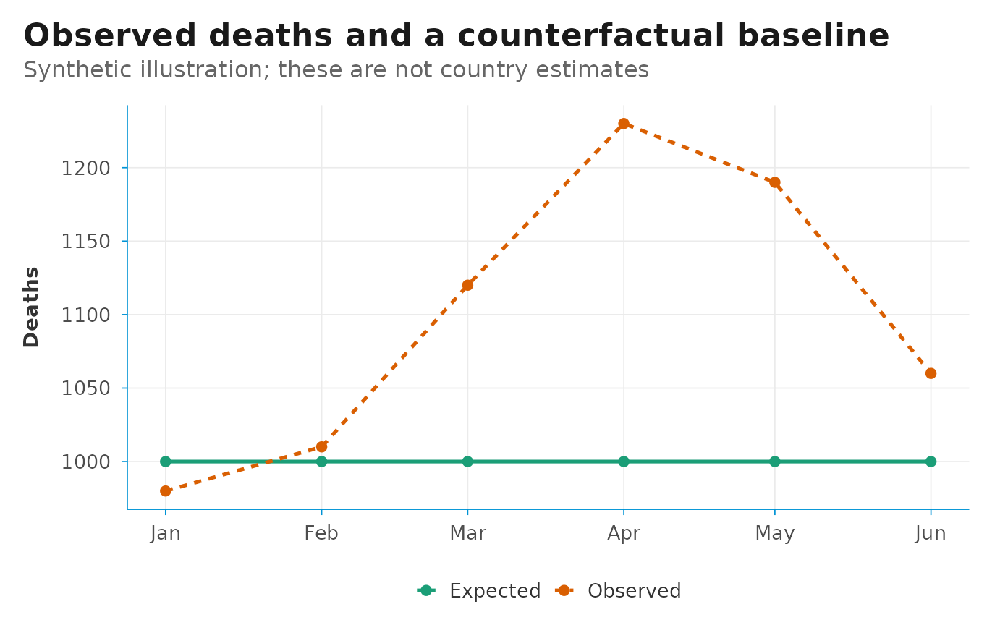

Choosing models and interpreting excess mortality
Source:vignettes/models-and-interpretation.Rmd
models-and-interpretation.RmdExcess mortality compares observed all-cause deaths with an estimated counterfactual: deaths expected under the baseline conditions. The expected value depends on the data, baseline and model. This guide helps you inspect those choices and explain the results.
The public package function is run_app(). Model fitting
is performed inside the Shiny application; this guide does not present
the internal model functions as a public R API.
Observed, expected and excess deaths
For a reporting period:
Positive excess means deaths were above the estimated baseline. Negative excess means they were below it. A P-score expresses the difference as a percentage of expected deaths. It is not a population mortality rate.
Here is a synthetic arithmetic example, with no fitted model:
illustration <- tibble(
month = as.Date(c("2020-01-01", "2020-02-01", "2020-03-01",
"2020-04-01", "2020-05-01", "2020-06-01")),
observed_deaths = c(980, 1010, 1120, 1230, 1190, 1060),
expected_deaths = c(1000, 1000, 1000, 1000, 1000, 1000)
)
illustration <- illustration |>
mutate(
excess_deaths = observed_deaths - expected_deaths,
p_score = if_else(expected_deaths > 0,
100 * excess_deaths / expected_deaths, NA_real_)
)
illustration
#> # A tibble: 6 × 5
#> month observed_deaths expected_deaths excess_deaths p_score
#> <date> <dbl> <dbl> <dbl> <dbl>
#> 1 2020-01-01 980 1000 -20 -2
#> 2 2020-02-01 1010 1000 10 1
#> 3 2020-03-01 1120 1000 120 12
#> 4 2020-04-01 1230 1000 230 23
#> 5 2020-05-01 1190 1000 190 19
#> 6 2020-06-01 1060 1000 60 6In April, 1,230 observed deaths against 1,000 expected deaths give 230 excess deaths and a P-score of 23%. When expected deaths are zero, the P-score is undefined; very small expected counts can make it unstable.
plot_data <- illustration |>
select(month, observed_deaths, expected_deaths) |>
pivot_longer(-month, names_to = "series", values_to = "deaths") |>
mutate(series = recode(series,
observed_deaths = "Observed", expected_deaths = "Expected"))
ggplot(plot_data, aes(month, deaths, colour = series, linetype = series)) +
geom_line(linewidth = 0.9) +
geom_point(size = 2) +
scale_colour_brewer(palette = "Dark2") +
theme_dsi() +
labs(title = "Observed deaths and a counterfactual baseline",
subtitle = "Synthetic illustration; these are not country estimates",
x = NULL, y = "Deaths", colour = NULL, linetype = NULL)
Aggregate the numerator and denominator
For several periods, calculate a cumulative P-score from the summed deaths. An unweighted average of period P-scores generally gives a different result when expected counts vary.
cumulative_summary <- illustration |>
summarise(
total_observed = sum(observed_deaths),
total_expected = sum(expected_deaths)
) |>
mutate(
total_excess = total_observed - total_expected,
p_score = 100 * total_excess / total_expected
)
cumulative_summary
#> # A tibble: 1 × 4
#> total_observed total_expected total_excess p_score
#> <dbl> <dbl> <dbl> <dbl>
#> 1 6590 6000 590 9.83Keep the same periods and population group in both sums. Avoid summing overlapping event totals, or a Total category together with its components.
Review the baseline first
In the current implementation, each model uses non-event observations
(event_index == "0") as the baseline. The input workbook
and event calendar determine which rows enter that baseline, including
unlabelled periods after an event. See Preparing mortality data and event
calendars.
Before comparing models, check whether baseline coverage, definitions and reporting completeness are comparable to the event period. Consider:
- changes in registration coverage or reporting delays;
- population growth and changes in age structure;
- seasonality, unusual baseline years and gaps in reporting;
- changes in geography or age-group definitions.
A good statistical fit cannot correct these issues by itself.
The model menu
The Model tab offers seven model families. Historical Average and Negative Binomial Regression are selected by default.
| Model | Baseline representation | What to examine |
|---|---|---|
| Historical Average | Average deaths for comparable periods in the baseline | Whether the historical level remains plausible when mortality trends change |
| Negative Binomial Regression | A count model allowing overdispersion, with trend and seasonal terms | Trend extrapolation, baseline length and dispersion |
| Quasi-Poisson Model | A Poisson mean model with an estimated dispersion factor | Mean structure and uncertainty; a proper likelihood AIC is unavailable |
| Zero Inflated Poisson Model | Separate zero and count components | Whether excess zeros have a substantive explanation |
| ARIMA/SARIMA Model | Time dependence and, where selected by the model, seasonality | Regular time spacing, complete coverage and forecast behaviour |
| GAM Spline Model | Smooth trend and cyclic seasonal terms in a negative-binomial GAM | Sensitivity of the smooth trend and its extrapolation |
| Karlinsky-Kobak Model | Period-of-year effects with a linear year trend | Whether a linear trend and the baseline’s seasonal pattern remain appropriate |
Start with a small number of models on the same group and input periods. Check run messages and inspect each expected trajectory. Add models to answer a specific sensitivity question, rather than assuming that more models automatically make the estimate stronger.
Use the Best Fit tab carefully
Best Fit displays AIC values when the app considers them comparable. Historical Average, Quasi-Poisson, ARIMA/SARIMA and Karlinsky-Kobak are excluded from the count-model AIC comparison in the current code. Available count-model AIC values can include Negative Binomial, Zero Inflated Poisson and GAM results.
Compare AIC only when models use the same response, observations and compatible likelihoods. A lower value describes a better balance of in-sample fit and complexity among that comparison set. It does not verify the event-period counterfactual or prove that a mortality difference was caused by the named event.
Also compare the shapes and levels of the expected trajectories. A model that fits the baseline well can still extrapolate implausibly.
Read uncertainty in context
The app reports lower and upper limits, but the construction differs across models. For example, the Karlinsky-Kobak implementation uses linear-model prediction intervals; other implementations use different calculations. Do not assume that every shaded band represents the same kind of interval.
For a fixed observed count, excess limits reverse the expected-death limits: subtract the upper expected limit for the lower excess bound, and subtract the lower expected limit for the upper excess bound. This treats the observed count as fixed and does not capture uncertainty about registration completeness.
For cumulative estimates, dependence between periods matters. Check the app’s aggregation method before interpreting a cumulative interval; adding period limits is not generally a joint interval calculation. The limits also do not include every source of uncertainty about the baseline, reporting delays or the choice of model.
Compare sensitivity and explain the finding
Keep the population group and event period fixed when comparing models. Then examine how conclusions change under another defensible baseline definition or event window. Record each change so that results can be reproduced.
A useful result statement names the geography, population group, dates, model, observed and expected counts, excess deaths, P-score and relevant uncertainty. Explain which assumptions could change the finding.
Excess all-cause deaths are not the same as deaths assigned to one cause. The difference can include direct and indirect effects, other coinciding events, data changes and model error. An event label in the calendar is an analysis period; it does not establish causation.
Save a reproducible record
Keep the workbook and event calendar, the package version, selected groups and models, processed data, result tables and report. State whether the data are provisional and record their extraction date.
packageVersion("exmort")
#> [1] '0.1.1'The Methods tab includes the methodology PDF shipped with the app. For the Karlinsky-Kobak approach, see Karlinsky and Kobak (2021), Tracking excess mortality across countries during the COVID-19 pandemic with the World Mortality Dataset. For the broader definition and scope, see the WHO explanation of excess mortality.